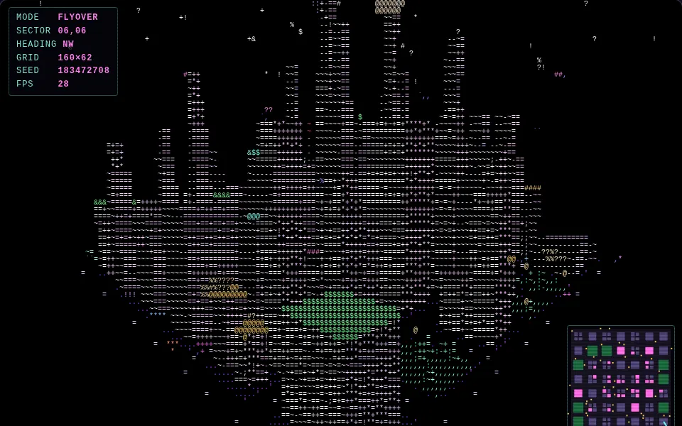
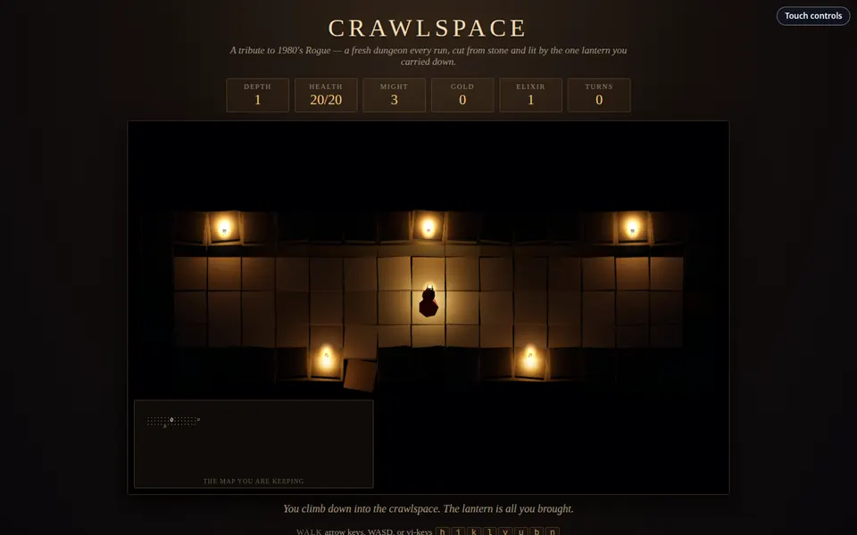
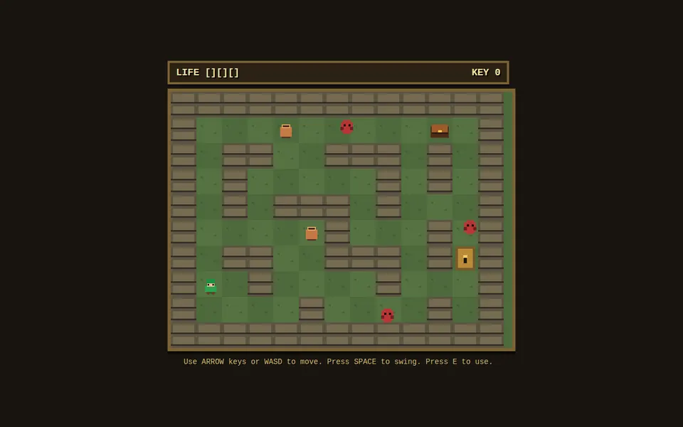

Computer Science · Graphics & Games
ASCII: Text That Became Games
A computer cannot store the letter A. It can only store numbers. ASCII is the 1963 agreement that says A is 65, B is 66, and so on for 128 characters. Programmers soon found two surprising uses for those characters. They used them as pixels to draw pictures, and they used them as symbols to build whole game worlds. Our showcase has projects that do both.
Every letter is secretly a number
Inside the computer, everything is made of bits, 0s and 1s. To store text, people had to agree on a character encoding: a table that gives every character a number. Before 1963, different companies used different tables, so a message typed on one machine could come out as nonsense on another.
ASCII fixed that. It uses 7 bits, and 7 bits can make 27 = 128 different patterns, so ASCII has exactly 128 characters, numbered 0 to 127. The number for a character is its code point.
Try it: type anything
| Char | Decimal | Hex | Binary (7 bits) |
|---|
1001000 1101001. The screen draws the letter shapes only when a human needs to read them.
The ASCII table has a plan
The 128 codes are not in random order. The designers grouped them so that simple math works on them. Click any character below to see its code.
- 0–31 and 127: control characters. They print nothing. Code 10 means "new line," and code 7 rings a bell.
- 48–57: the digits 0–9. Subtract 48 from the code to get the digit's value.
- 65–90: A–Z.
- 97–122: a–z, exactly 32 after each capital.
1000001 and a is 1100001. Changing capitals to lowercase is just switching one bit on. Press the button above and watch the whole alphabet change case at once.
ASCII was built for English. Today computers use Unicode, which has room for every alphabet and every emoji. But Unicode's first 128 characters are exactly ASCII, so the table you just explored is still inside every phone and computer.
Idea one: characters as pixels
Early printers and terminals could print only text. But look closely and you will notice that @ covers much more of its box than . does. From across the room, a page full of @ looks dark and a page full of . looks light. So a character can stand in for a shade of gray.
That works only in a monospace font, where every character has the same width, so the characters line up in a grid like pixels on a screen.
- Shrink the picture so each pixel becomes one character cell.
- Measure each pixel's luminance: 0.299·R + 0.587·G + 0.114·B.
- Pick a character from a character ramp, sorted from least ink to most ink. Dark pixels get a space, bright pixels get
@.
Try it: shade a 3D shape with text
Ramp in use:
.'`,:;-~=+*!?%#&$@. It adds one trick this demo doesn't have: the brightness picks the character, and the pixel's hue tints its color.
The spinning donut is based on Andy Sloane's famous donut.c (2006), a C program whose own source code is shaped like a donut.
Idea two: characters as a map
In 1980, two students at UC Santa Cruz, Michael Toy and Glenn Wichman, wanted to make an adventure game with a map, but their terminals could only show text. They used a new library called curses, written by Ken Arnold at UC Berkeley, which could place any character at any row and column. They called the game Rogue.
In Rogue, a character does not mean a shade. It means a thing. @ is you. # is a tunnel. . is floor. Capital letters are monsters: B for bat, Z for zombie. Rogue also created rules that games still borrow today:
- Procedural generation: a brand-new dungeon every time you play.
- Permadeath: if you die, the game is over. No saves.
- Turn-based: monsters move only when you do, so you always have time to think.
Games built on these rules are called roguelikes.
Try it: a tiny Rogue
Click the map, then move with the arrow keys, WASD, or Rogue's own keys (h j k l). Walk into a monster to fight it. Find > to go deeper. Rooms are laid out Rogue's way: a 3 × 3 grid of rooms joined by tunnels.
Our ASCII family tree
Three projects in our showcase grew out of the ideas above. Each one takes the grid of characters and does something different with it. Click a picture to enlarge it.


#, . and @ are rebuilt as 3D stone and lit by a lantern. The characters still draw the parchment map in the corner. Play it. Screenshot: ClassroomOS showcase.
[1, 0, 0, 4, 0, 3, 1], where 1 is a wall, 3 a chest, and 4 a pot. That is Rogue's tile map, drawn as pictures. Play it. Screenshot: ClassroomOS showcase.Side by side
| Rogue (1980) | ASCII City | Crawlspace | Retro Dungeon Quest | |
|---|---|---|---|---|
| What a character means | A thing (@ = you) | A brightness | A thing, on the map only | A thing, stored as a number |
| The world is stored as | A grid of squares | 3D shapes | A grid of squares | A grid of numbers |
| What you see on screen | Characters | Characters | 3D stone + an ASCII-style map | Pixel-art tiles |
| New level each play? | Yes | Yes, a new city | Yes | No, hand-built |
| Part of this lesson | Part 4 | Part 3 | Parts 3 and 4 | Part 4 |
The wider family
- 1963ASCII is published as an American standard.
- 1976–77Colossal Cave Adventure (Will Crowther, then Don Woods) is a game made entirely of sentences. You type
GO NORTHand read what happens. - 1980Rogue turns characters into a map. It spreads to universities with the BSD version of Unix.
- 1987NetHack, grown from Rogue's descendant Hack, is still being updated by volunteers today.
- 2006Dwarf Fortress (Tarn and Zach Adams) simulates entire civilizations using the 256-character IBM PC set, an extended ASCII.
- 2006Andy Sloane's
donut.cshows that a 3D shape can be lit using nothing but text. - TodayGames like Spelunky, Hades, and Slay the Spire are called roguelikes, even with no ASCII in sight. The rules survived after the characters were gone, just as they did in Crawlspace.
Build your own
Swap in your own character ramp. What happens with emoji, or with only 01?
Rewrite Retro Dungeon Quest's number map using #, ., +, and $. Is it easier to read?
Design a new Rogue monster. Pick its letter, its hit points, and how it moves.
Practice
EasyASCII uses 7 bits. How many different characters can it hold?
2 × 2 × 2 × 2 × 2 × 2 × 2.
EasyA is 65. What is the code for H?
Count: A B C D E F G H. H is 7 letters after A.
MediumD is 68. What is the code for lowercase d?
Lowercase is always 32 more than its capital.
MediumWhich character sits at code 64, the binary number 1000000? (It's the one Rogue used for the player.)
It comes right before A (65) in the table.
HardWith the ramp .:-=+*#%@, which character does the brightest possible pixel get?
The ramp runs from least ink to most ink. Brightest means the end of the ramp.
HardCrawlspace shows 3D stone and Rogue shows #, yet they can use the same dungeon. What do they share: the picture, or the underlying ___?
Think about the "Draw as" buttons in Part 4. What stayed the same?